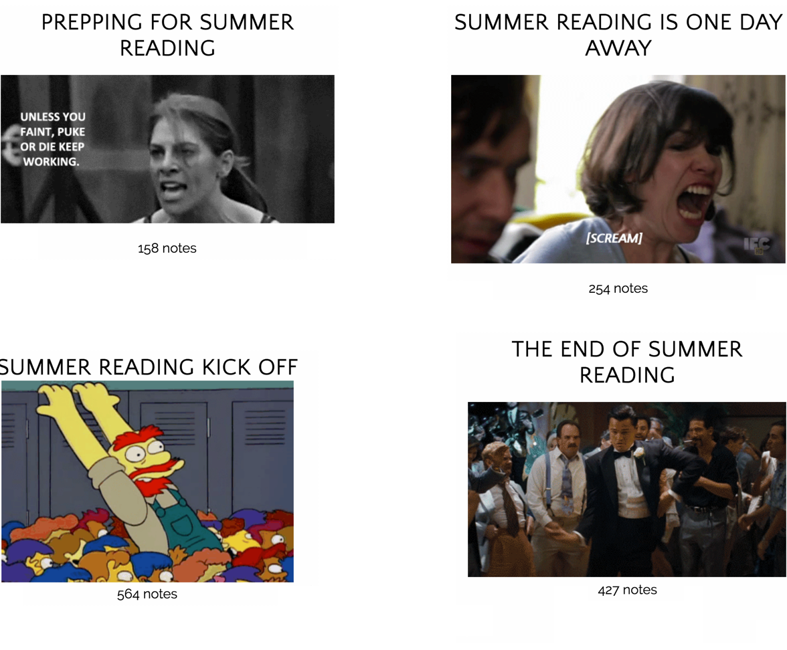
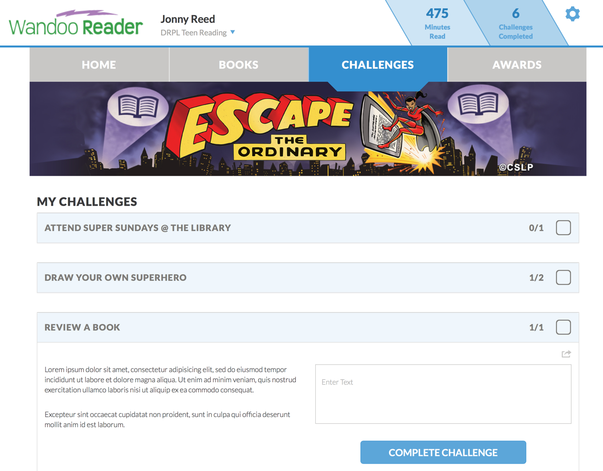
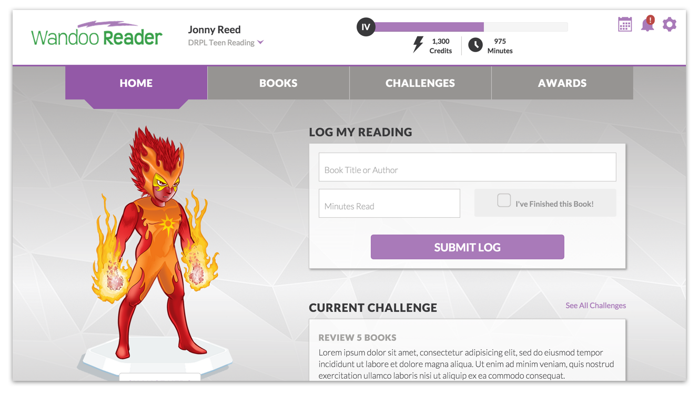

Wandoo Reader
Helping to make summer reading at the library fun and easy
Wandoo Reader is a gamified reading program management tool designed for librarians who want a simple and fun way to encourage literacy in their communities, and track engagement data for their programs.
Project Overview
The Challenge
Evanced's market leading summer reading product was quickly gaining a reputation for being archaic and difficult to use. The aging platform was unable to keep up with the evolving needs of librarians and library patrons.
My Role
As the lead UX designer on the project I was involved from kickoff to launch, even pitching multiple product features and seeing them through to production.
The Team
The project team included a front end designer, a product owner, a subject matter expert in the field of children's education, and a development team located in Leeds England (Dubit).

Discovery
Getting out of the building
We put our initial assumptions to the test by visiting libraries in 5 states and listening to the frustrations and fantasies librarians had about their summer reading programs. These interviews helped us understand where our current product fell short and informed of our user personas.
"The summer reading software we use is very intensive to set up.
I had to figure out HTML code to make changes."
"Keeping track of paper logs is a lot of work for our staff,
especially when we have to turn in our yearly reports."
"Our library creates a huge, elaborate game board that goes
along with our summer reading program."
Learning from social media
As part of our research, we followed librarians on social media platforms like twitter, reddit, and tumblr. We weren't surprised to find that librarians are fantastic writers and communicators. Find more hilarious librarian problems here.

Ideation and Prototyping
I worked very closely with the product owner throughout the project with near daily white boarding sessions to define requirements and sketch out ideas. After each iteration of the design, we tested with librarians and library patrons.
Ultimately we designed an experience that allowed library patrons to track their reading, complete challenges, win awards, and receive messages from the library.
Beyond just summer "reading"
Research shows that students lose an average of 2-3 months of academic skills during the summer months including math and science. That is why libraries are broadening their definition of summer reading to include STEM, physical activity, and fun.
As a first step toward summer learning, I designed a customizable challenge that allowed librarians to design challenges to be completed by patrons using the website. Most librarians are naturally creative and loved thinking up challenges, while patrons enjoyed seeing new content pop up when they logged in to Wandoo Reader.
It was incredible to see this feature catch fire quickly after launch with 4,198 challenges created by librarians and 122,683 completed by patrons in the first summer season it was launched.
Designing for children
I worked with a very talented subject matter expert and former teacher to test designs and be sure that all copy on the site was an appropriate grade level for the audience. We did this by conducting a pilot with three different schools and ongoing interviews with kids and teacher librarians from those schools.
We ended up adding special features for the kid's version of the product including a new theme and story each year, and the ability to level up and customize a character.
What I would have done differently
Looking back, we had data to suggest that kids were using mobile devices more and more each year. We treated desktop as the primary use case, therefore the mobile experience - navigation especially - could use some improvement. There was also a huge need for a Spanish version of the product, which did not make the cut for our first release. If I could go back I would definitely have fought to get that feature prioritized.